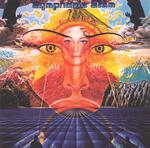

| Artist: | Symphonic Slam |
| Title: | Symphonic Slam |
| Label: | Musea FGBG 4366.AR |
| Length(s): | 41 minutes |
| Year(s) of release: | 1976/2001 |
| Month of review: | [11/2001] |
| 1) | Universe | 6.37 |
| 2) | Everytime | 4.21 |
| 3) | Fold Back | 2.50 |
| 4) | I Won't Cry | 2.55 |
| 5) | Let It Grow | 3.56 |
| 6) | Modane Train | 4.19 |
| 7) | Times Run Short | 2.48 |
| 8) | Days (instrumental) | 5.00 |
| 9) | Summer Rain | 3.53 |
| 10) | How Do You Stand (before The Lord) | 4.56 |
Preferably they could have dug up the second album, Timo Laine, as well for bonus tracks. Or will that be a separate release?
Everytime is a love song opening with foreboding (again). The music has tension building cymbals and a violin like sound in the back until the keyboards drown them out. The vocal part is quieter again, with open, somewhat spacey sounding vocals. The vocal melody is extremely memorable with every sentence going from soft to loud and bombastic. The interluding synths are wonderfully melodic with washes of just about anything. Pure bombast, but in stately not-over-the-top fashion with the (now so fashionable) organ gurgling low. Again, a great track.
Funk we find on Fold Back. This is much less likable track. Instrumentally the song is not even that bad, but the poppy vocals (sounding a bit far away in the mix) is not great. The rock side to the song also sounds very seventies. No mood building whatsoever.
I Won't Cry has a certain Cream feeling over it. This means rather complex blues rock, but again it is not one of the better tracks. For that it is simply too seventies again with more focus on rock and groove and too little on "progressive rock" as we know it. It is quite energetic and the drummer hacks away quite nicely, but it is simply rock 'n' roll. Note however that the two former tracks are also much shorter than the good ones.
Let It Grow is next up. The bombast returns here with something combining full blown synths with a classical style. Quite nice. I do get the feeling that at some points the music drops away a bit. Very slightly, but with my headphones it is audible.
Back to the percussive rock of earlier with Modane Train. For some reason I was also reminded of ELP, but certainly not their better tracks. The heavy organ at the end will sound great to some, but the song itself is a bit too much plain rock again. At times I have trouble figuring out whether some effects are part of the music or part of the bad quality of the tape that has been used. Anyway, Times Run Short is a bit of an easy-going track with plenty of synth horns. Not that interesting.
Days is an instrumental and in view of the fact that the vocals are not the strongest part of the album, it holds a promise. ELP comes most to mind at first, but there is definitely something of Kansas in the synth as well. The track has a strong groove with a low bass, weird "duck" sounds, this is still a very progressive sounding instrumental with plenty of energy.
Summer Rain opens quietly with Genesis like acoustic guitar and then some piano. A good beginning. A sad ballad and one of the better tracks on the album (comparable to the first two). The line "Rain Has Fallen And So Have I" sum it up well.
Up-tempo prog on the closer How Do You Stand (Before The Lord). The music has a live/blues feel all over it, but it is definitely prog. Extremely energetic at times, the music is also the vocal parts has a very relaxed jazzy bass. A good closer.